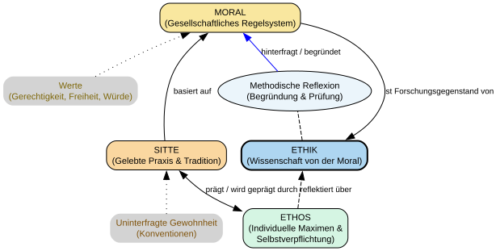

Code
import graphviz
from IPython.display import display
# Erstellung des Digraph-Objekts
dot = graphviz.Digraph(comment='Unterscheidung Ethik Moral Sitte', format='png')
# Globale Layout-Einstellungen
dot.attr(rankdir='BT', size='10,10') # Bottom-to-Top: Von der Praxis zur Theorie
dot.attr('node', shape='rectangle', style='filled,rounded', fontname='Arial', fontsize='11')
dot.attr('edge', fontname='Arial', fontsize='10')
# --- Ebene 3: Theorie/Reflexion (Die Meta-Ebene) ---
dot.node('Ethik', 'ETHIK\n(Wissenschaft von der Moral)', fillcolor='#AED6F1', penwidth='2')
dot.node('Reflexion', 'Methodische Reflexion\n(Begründung & Prüfung)', shape='ellipse', fillcolor='#EBF5FB')
# --- Ebene 2: Das Regelsystem (Die Norm-Ebene) ---
dot.node('Moral', 'MORAL\n(Gesellschaftliches Regelsystem)', fillcolor='#F9E79F')
dot.node('Werte', 'Werte\n(Gerechtigkeit, Freiheit, Würde)', shape='none', fontcolor='#7D6608')
# --- Ebene 1: Die Praxis (Die Handlungs-Ebene) ---
dot.node('Sitte', 'SITTE\n(Gelebte Praxis & Tradition)', fillcolor='#FAD7A0')
dot.node('Praxis', 'Uninterfragte Gewohnheit\n(Konventionen)', shape='none', fontcolor='#7E5109')
# --- Sonderform: Das Individuum ---
dot.node('Ethos', 'ETHOS\n(Individuelle Maximen &\nSelbstverpflichtung)', fillcolor='#D5F5E3')
# --- Verbindungen ---
# Von der Praxis zur Moral
dot.edge('Sitte', 'Moral', label='basiert auf')
dot.edge('Praxis', 'Sitte', style='dotted')
# Von der Moral zur Ethik
dot.edge('Moral', 'Ethik', label='ist Forschungsgegenstand von')
dot.edge('Ethik', 'Reflexion', arrowhead='none', style='dashed')
dot.edge('Reflexion', 'Moral', label='hinterfragt / begründet', color='blue')
# Werte fundamentieren die Moral
dot.edge('Werte', 'Moral', style='dotted')
# Ethos-Bezug
dot.edge('Ethos', 'Sitte', label='prägt / wird geprägt durch', dir='both')
dot.edge('Ethos', 'Ethik', label='reflektiert über', style='dashed')
# Wirtschaftsethik-Beispiel (optional als Notiz)
#dot.node('Note', 'Wirtschaftsethik-Beispiel:\nEthik = Wirtschaftsethik\nMoral = Wirtschaftsmoral\nSitte = Wirtschaftspraxis',
# shape='note', fillcolor='#FEF9E7', fontsize='9')
# Anzeige des Diagramms
display(dot)